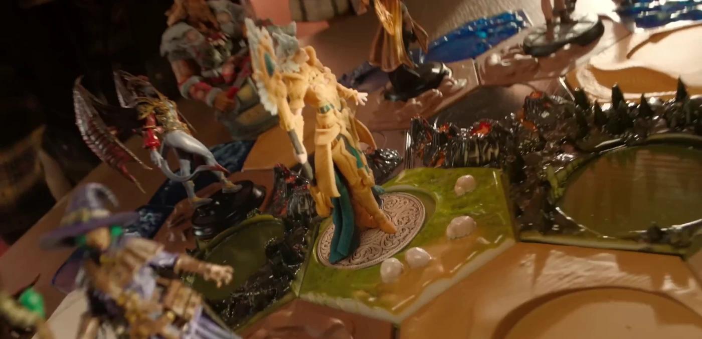
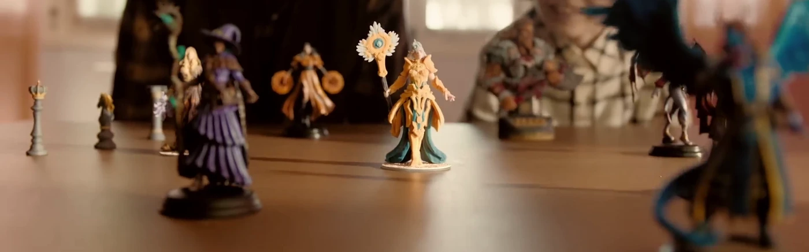
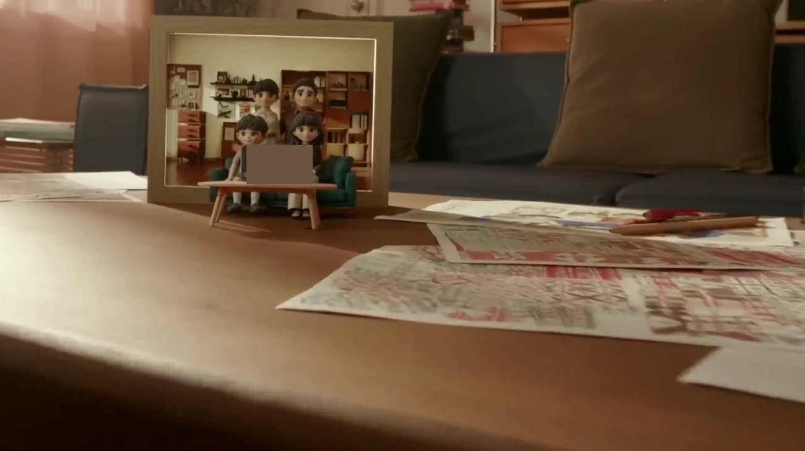
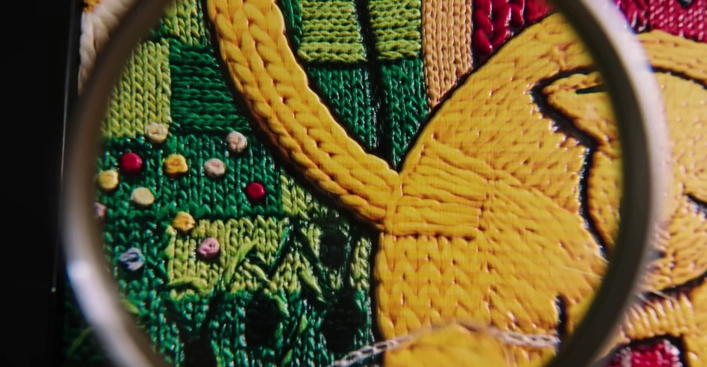
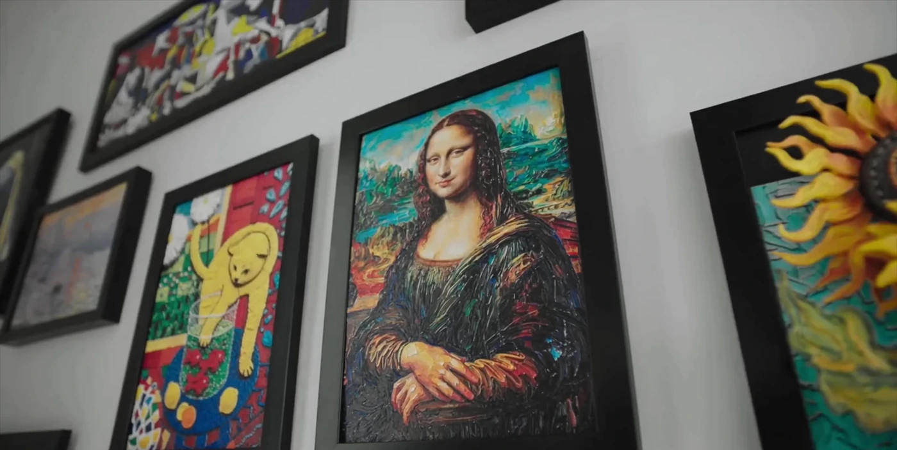
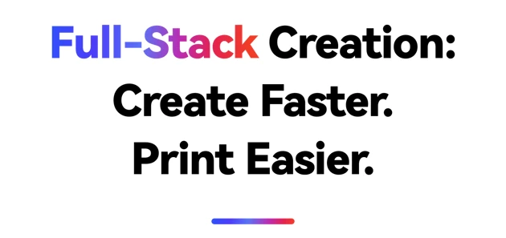
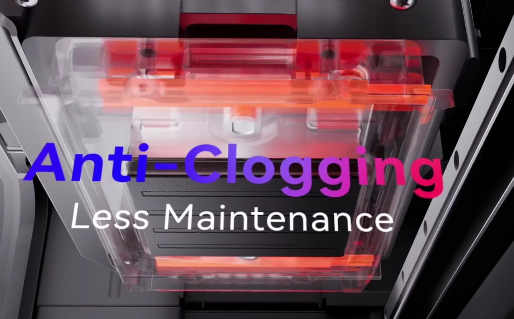

先说清楚：它到底是什么？
相邻品类的功能、价格与技术路线容易混淆。既要说明差异，又不能用未经确认的参数构造“优势”。
Bella—

画面对照，是这段工作的一个切面。真正值得看的是：前一个环节形成的判断，怎样进入下一个环节的产出。
往下看 ↓01 / THE ASSIGNMENT
这次项目面向创作者与小型工作室。产品同时涉及硬件、材料、软件和多种创作方式，营销工作的难点，远不止写出一段好文案。
相邻品类的功能、价格与技术路线容易混淆。既要说明差异，又不能用未经确认的参数构造“优势”。
创作者关心表达自由，小型生意主关心订单和工作流，第一次使用的人关心是否学得会。同一张参数表，不能回答所有人。
产品资料、页面、FAQ、广告、直播与影片不是各写各的。功能名称、承诺边界和核心卖点需要持续对齐。
持续整理产品与市场信息，将事实转成营销判断，将判断转成可执行资产，再用团队反馈和上线问题修订下一轮工作。
02 / THE WHOLE WORKFLOW
以下按项目记录重建工作链，隐去客户与商业信息。展开每一阶段，可以看到输入、关键判断、具体行动，以及它怎样影响下一步。
把“做一份关键词表”，接成后续营销工作的起点。
关键价值：把一次零散需求转成后续能持续使用的工作底稿。
从搜索摘要和自家卖点，走向完整规格与品类标准。
关键价值：反馈改变的不只是文档，而是下一次研究的标准。
不止列功能，还要说明对谁有用，以及为什么重要。
关键价值：把“我们的产品有什么”，转成“这类客户为什么在意”。
搜索负责接住意图，内容负责建立理解，演示负责回答疑问。
关键价值：把内容、用户旅程和渠道动作放进同一张工作地图。
所有触点共享事实，但各自回答不同的问题。
关键价值：既帮助客户理解，也减少团队在不同渠道重复解释和互相矛盾。
逐项检查卖点是否进入画面、字幕和口播。
关键价值：保留原脚本的长处，让影片更完整地承担营销任务。
让场景、人物动作、镜头细节和情绪都具体起来。
关键价值：把抽象沟通变成看得见、能指着修改的创意参考。
从传播内容，继续走到疑问处理与版本维护。
关键价值：前期的产品理解没有作废，而是继续服务真实用户反馈。
03 / MARKETING JUDGMENT
输出一张表并不难。难的是这张表能否影响主张、渠道、页面和镜头，让团队知道先讲什么、对谁讲、拿什么证明。
THE STRATEGY CHAIN
一个真实的修正
“竞品对比维度不够。”
根据项目反馈归纳，非聊天截图或逐字引述。
这一轮之后，Bella 的任务不再是往表里补几个有利参数，而是重建比较方法。
以下是根据本项目工作逻辑整理的匿名示例，并非客户原表的直接复制。点击切换三种典型能力。
从已有照片或图像进入模型制作流程，减少从空白开始的步骤。
创作、模型准备和输出不再只是一串孤立的软件名称。
面向非专业用户，把“会不会建模”的顾虑，转成能看懂的第一步。
展示“照片 → 模型 → 成品”的连续过程；把仍需人工处理的步骤说明白。视频讲直观过程，FAQ 解释使用条件。
原稿中是一组同时出现的维护技术，信息集中但不容易理解。
将技术机制和对应问题建立联系，避免把“自动化”写成无需维护。
工作室关心的是下一次使用时的准备和持续运行，而不只是功能名。
机制动画 + 人能理解的一句收益说明；详细问答再解释清洁模式、闲置维护与耗材消耗，不能承诺永不堵塞。
不同载体、附件和制作形式，对应不同的定制任务。
从零散样品展示，组织成客户图案、制作准备和成批输出的过程。
让小型工作室看见可提供的定制服务，而非只看到一桌漂亮样品。
具体订单场景、工作流演示、材料适用条件与成本说明；“可以服务哪些需求”不等于“保证盈利”。
项目中形成的不只有主视觉，还包括关键词分层、问答、评测沟通与直播框架。
区分品牌防御、品类需求、竞品比较与交易意图，按发布阶段安排信息。
主页面解释核心价值；FAQ 补充功能边界、维护、成本、配件与政策。
演示前整理已知限制与适用条件，让评测沟通基于真实产品情况。
把演示、问答、品牌故事与互动编排成流程，并明确素材和执行准备。
STRATEGY INTO CREATIVE
以下对照保留原始局部构图。点击图片，可以查看放大细节。
04 / FROM CONCEPT TO FILM
项目负责人反馈，多项建议和创意进入了最终执行。这里用真实素材展示四个具体例子：不只看“像不像”，更看场景、动作和产品利益怎样被组织起来。
产品能力：全彩模型 + 场景构建 / 营销任务：让创作价值变得具体
单个样品能证明“能打印”，却不一定让人理解“为什么想拥有”。需要把模型放回用户的兴趣和关系中。
在原稿已有的父子桌游主题上，把反馈中的故事感、魔法感与人物动作转成第二版概念图，让团队围绕具体画面沟通。
保留桌面世界与互动叙事，用完整地形和角色组合呈现创作自由。最终没有逐字逐景照搬概念图中的喷火效果。

从单品展示，走向用途展示。技术能力没有消失，而是通过“这些模型可以组成什么体验”被理解。人物互动与完整世界，是这组叙事的重要连接。
产品能力：图像到立体作品 / 营销任务：降低理解和创作门槛
把日常影像、手绘与个人化物件放在一起。

家庭合影转为立体场景，给建模过程一个看得见的结果。
软件名称和“AI 建模”本身难以形成画面。新手需要知道从哪里开始、最后能得到什么。
审核中指出软件名词堆叠，建议把创作过程讲清楚；概念图进一步将家庭影像、孩子的画与日常物件放入一个使用情境。
影片展示拍照、模型生成与立体家庭作品。这里延续的是“个人记忆变成作品”的价值，人物和产品形式并非概念图的原样复制。
原脚本已包含图像生成与家庭叙事；这一阶段的增量，是表达梳理与情境具体化。截帧中的实色小块用于移除微型设备信息。
产品能力：立体纹理与色彩 / 营销任务：让差异能被视觉理解
作品、观看者与放大观察动作一起建立艺术体验。

放大镜与微距纹理，让“立体”不再只是一句说明。
只给出纹理高度，观众很难想象差别。要把参数转成表面起伏、光线和观看动作。
沿着原稿的艺术与放大观察方向，补充可对齐的场景图、纹理特写和尺度表达建议，让“触感”成为具体画面要求。
画廊展示建立作品语境，放大镜镜头强调纹理细节。场景与近景共同承担“为什么值得看”的叙事。

大场景给意义，微距给证据。创意没有停留在“颜色丰富”，而是让观众看到作品怎样被创作、展示和欣赏。
产品能力：透明与彩色的组合 / 营销任务：补足重要能力表达
审核指出，重要的透明材质能力没有得到清楚展示；只讲全彩会遗漏另一层创作空间。
补入透明模型及对比型视觉参考，让抽象材料能力变成观众能看到的物件。
上线影片给出透明与彩色结合的镜头。最终物件与概念参考不同，传达的是同一个需要补足的功能价值。
这些对照说明的是一段持续协作的工作：原稿、审核、沟通、概念和最终制作相互衔接。多项建议进入执行，是工作价值的表现；全案各环节之间的连续性，才是这个案例的主线。
05 / COPY THAT DOES A JOB
TVC 审核把页面卖点与影片表达放到一起看。以下“原状”和“建议”均做匿名归纳，上线观察结合影片及页面核对，不把某一条最终文案简单归为个人原创。
保留强镜头和有效叙事，不为修改而修改。
拆开技术名词，补上用户为什么在意。
增加必要标签或动作，不要求观众自行猜测。
按重要性补充，避免把影片变成参数清单。
多个软件名和“AI 建模”挤在一条花字里。
让用户看见从一张图，到模型，再到作品的步骤；把上手价值说清楚。
上线观察：影片在约 01:20—01:28 展示照片转模型，并说明新手可开始创作；页面另设创作软件与多种输入方式的板块。

自动清洁、温控和供墨机制同时堆叠，缺少解释。
让机制动画说明怎样维护，再用一句话点出减少手动维护负担。
上线观察：影片约 02:24—02:32 将清洁、加热与降低堵塞风险相连；页面也以维护负担为标题重点。

原审核发现透明材质的表达缺失，影响差异化的完整性。
用一个透明物件直接展示；材质能力不能只留在规格表里。
上线观察：影片约 00:26—00:30 明确呈现透明与彩色组合，页面也单独组织该能力。具体物件由最终制作决定。
有纹理参数，但观众缺少对厚度、表面和效果的直觉。
增加纹理近景与参照，让起伏可见，让触感可想象。
上线观察：影片约 03:21 使用放大镜观察细节；页面用局部放大展示纹理。最终不是概念图中尺度参照的原样复现。
多个配件与材料隐含在样品中，但用途没有被逐一说清。
把模块、材料与任务连接起来，让工作室理解能够服务哪些定制需求。
上线观察：影片约 01:56—02:10 组织了客户照片、定制作品、批量制作及模块扩展的过程。
原稿已有很强的形态变化开场，仍需更明确的总括与情感收束。
开场说明创作范围，结尾回到人能实现什么，而不是重复罗列功能。
上线观察：影片以创作形态展开，以面向更多人的创造价值结束。最终口号与建议版本不同，不能算作逐字照搬。
还有一种常见情况：一项建议没有进入主视频，却由页面承担。例如文字生成模型在页面中有独立展示。全案应看信息怎样被合适的载体承接，而不只看是否出现在某一支片子里。
06 / AFTER THE LAUNCH
Bella 的工作没有停在“全案已交付”。上线后的疑问、反馈和新传播任务，继续进入同一套产品理解与内容体系。
01 / READ THE QUESTIONS
02 / CHOOSE THE RESPONSE
03 / UPDATE THE WORK
这些问题没有被藏起来，而是变成后续可以复用的工作要求。
研究质量
第一版研究暴露出维度和来源不足。改进不是多搜几条，而是先建立品类标准、再读完整资料、最后处理冲突和未知项。
沟通质量
“更有感觉”需要转成镜头、动作、道具、空间和情绪。图像参考让项目负责人和制作团队有共同的讨论对象。
版本质量
里程碑视频迭代中曾出现已确认素材回退的问题。由此沉淀内容完整性检查、版本标识与发布前人工复核要求。
07 / THE COLLABORATION MODEL
这里的全案能力，是理解并衔接多个专业环节：Bella 承接研究、梳理、建议和创意产出，人和团队承担关键决策与最终执行。
BUSINESS OWNER
提出业务方向，提供和确认产品事实，判断优先级，反馈创意，决定取舍与对外承诺。
CONTINUOUS MARKETING WORK
承接上下文，研究与验证信息，建立 FAB 和内容结构，提出策略，协同文案，审核脚本，输出概念，跟进反馈并沉淀复用方法。
PRODUCTION & RELEASE
提供既有创意和内容，完成产品、拍摄、设计与后期执行，结合项目条件形成最终素材并发布。
Agent 的商业价值不在“替所有人做一切”，而在于让信息、判断、素材和反馈能够跨环节延续，减少重复理解、表达断层与交接损耗。
08 / WHAT CAN BE REUSED
案例中的客户资料不能复制，工作方法可以。将一次全案经验拆成能够交接、评审和复用的模块，比只保存几条好提示词更有意义。
下载全案协作工作表Markdown 可编辑模板 · 不含客户原始资料
真正的 Agent 实战，
不是把一句话变成一份文件。
是把一项工作，持续往前推进。
对于准备发布新产品、面对复杂功能或多渠道内容协作的团队，这个案例展示了一种可行的分工：让 Agent 持续参与营销工作，让专业判断和人的反馈始终在场。
了解 AIelsen 如何交付 Agent 与 FDE 服务 ↗